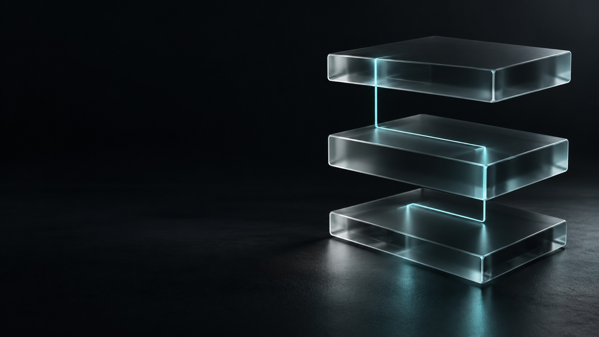

סוכני AI ואוטומציות שמחברים בין הכלים, האנשים והעבודה שלך.
זוהי הדגמה מקומית של שפת העיצוב. אפשר לחבר את הכפתור לטופס באתר.
מבינים את התהליך ואת המטרה.
בונים מערכת שמתאימה לעסק.
בודקים ביצועים ומתקדמים.
